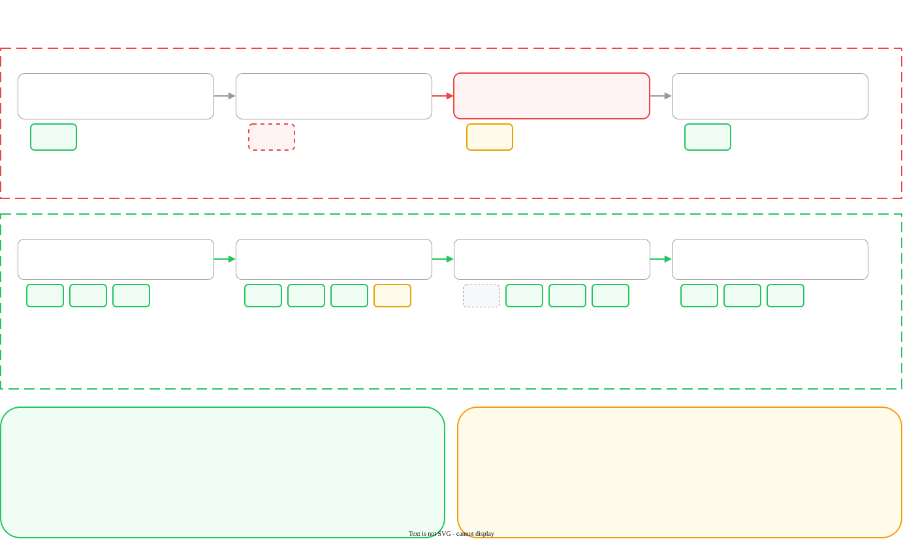

Scaling and Upgrading the Hybrid Gateway
How to scale the gateway, how to upgrade it safely, and how to go back when an upgrade is bad
Palo Alto Networks and Portkey do not publish an upgrade procedure, a rollback procedure, or a compatibility matrix. We looked for one. There is none.
This page is built from the Helm chart and from standard Kubernetes behavior. It is correct for the chart as we read it. It is not a vendor procedure, and nobody has run it against a production cluster yet.
Use it on a test cluster first. Tell your customer where it came from.
1. The chart defaults are not production defaults
Start here. The chart installs and runs with its default values. Those values are not safe for production, and an upgrade makes the problem visible.
| Value | Default | What it does to you |
|---|---|---|
replicaCount |
1 | One pod serves all traffic. An upgrade stops that pod. A node failure stops that pod. Each one is a full outage. |
strategy |
{} (empty) | Kubernetes uses its own default. The default permits 25 percent of pods to be unavailable. With one replica, Kubernetes can stop your only pod before the new pod is ready. |
resources |
{} (empty) | The pod has no CPU request and no memory request. Kubernetes gives it the lowest quality of service, and removes it first when a node is short of memory. Autoscaling on CPU also cannot work, because a percentage of nothing has no meaning. |
autoscaling.enabled |
false | The replica count does not change with load. |
topologySpreadConstraints |
[] (empty) | Kubernetes can put every replica in one availability zone. The loss of that zone is then a full outage, even with three replicas. |
revisionHistoryLimit |
10 | This one is good. Kubernetes keeps ten old ReplicaSets, so a rollback has something to return to. |
images.gatewayImage.tag |
pinned | This one is good. The chart pins an exact image tag. Keep it pinned. Never use latest. |
We looked for one. The chart does not make a PodDisruptionBudget, and the documentation does not mention one.
Without it, a node drain can stop all of your gateway pods at the same time. A cluster upgrade drains nodes. Write your own PodDisruptionBudget. Section 3 gives one.
2. Scale the gateway
The gateway pods hold no state. All shared state is in Redis. This makes the gateway easy to scale: add replicas.
2.1 — Set a replica count
Use three replicas or more for production. The Portkey architecture document also shows three.
replicaCount: 3
resources:
requests:
cpu: 500m
memory: 512Mi
limits:
memory: 1GiSet a CPU request and a memory request. Set a memory limit. Do not set a CPU limit, because a CPU limit makes the gateway slower under load for no safety gain.
No requests-per-second figure is published for the gateway on any platform. The numbers above are a safe start for a first deployment. Measure your own load, then set the values from your measurement.
2.2 — Spread the replicas across zones
Three replicas in one zone do not survive the loss of that zone. Add a topology spread constraint.
topologySpreadConstraints:
- maxSkew: 1
topologyKey: topology.kubernetes.io/zone
whenUnsatisfiable: ScheduleAnyway
labelSelector:
matchLabels:
app.kubernetes.io/name: gatewayUse ScheduleAnyway and not DoNotSchedule. ScheduleAnyway spreads the pods when it can. DoNotSchedule can stop a pod from starting, which is worse than an unbalanced spread.
2.3 — Turn on autoscaling
The chart has a HorizontalPodAutoscaler. It is off. The values below are the chart defaults.
autoscaling:
enabled: true
minReplicas: 2
maxReplicas: 20
targetCPUUtilizationPercentage: 60
targetMemoryUtilizationPercentage: 60The chart scales up quickly and scales down slowly. It adds two pods every two seconds with no delay. It removes one pod every sixty seconds, and only after five minutes of low load. This is the correct shape for a gateway.
A HorizontalPodAutoscaler measures CPU as a percentage of the request. The chart sets no request. If you turn on autoscaling and leave resources empty, the autoscaler cannot calculate a percentage and it does not scale.
Set resources.requests.cpu at the same time. These two settings only work together.
Set minReplicas to 3 or more if you use autoscaling with the zone spread in section 2.2.
3. Prepare for a safe upgrade
Do these four things one time. They make every later upgrade safe.
3.1 — Set the deployment strategy
This is the most important change on this page. The chart leaves the strategy empty, and the example in the chart is commented out. Uncomment it.
strategy:
type: RollingUpdate
rollingUpdate:
maxSurge: 1
maxUnavailable: 0maxUnavailable: 0 tells Kubernetes to start a new pod and to wait for it to be ready. Only then does Kubernetes stop an old pod. This gives an upgrade with no loss of traffic.
3.2 — Write a PodDisruptionBudget
The chart does not make one. Apply this yourself, in the same namespace.
apiVersion: policy/v1
kind: PodDisruptionBudget
metadata:
name: portkey-gateway-pdb
namespace: portkeyai
spec:
minAvailable: 2
selector:
matchLabels:
app.kubernetes.io/name: gatewaySet minAvailable to one less than your replica count. Confirm the label with kubectl get pods -n <namespace> --show-labels before you apply this, because a selector that matches nothing protects nothing.
3.3 — Keep the values file
Keep values.yaml in version control. Each upgrade must use the same file.
Gateway Registration makes a values.yaml for your deployment. The registration screen says that the file is not available after you leave the screen.
If you lose it, you must register the gateway again. Put the file in version control on the day you get it.
3.4 — Know your current state
Record these before you change anything. You need them to go back.
helm list -n $NAMESPACE
helm history portkey-ai -n $NAMESPACE
helm get values portkey-ai -n $NAMESPACE > values-before-upgrade.yaml
kubectl get deploy -n $NAMESPACE -o wide4. The upgrade procedure

Do these steps in order. Stop at any step that fails.
Step 1 — Upgrade a test cluster first
Use a cluster that carries no production traffic. Run the full procedure there. Then come back.
Step 2 — Read what changed
helm repo update
helm search repo portkey-ai/gateway --versions | head -10Compare the new chart values against your values file.
helm show values portkey-ai/gateway --version <new-version> > /tmp/new-defaults.yaml
diff <(helm show values portkey-ai/gateway --version <current-version>) /tmp/new-defaults.yamlNo document states which chart version works with which gateway image version. Pin the image tag in your values file. Change the chart version and the image tag in separate upgrades, so that a failure has one cause.
Step 3 — Choose a quiet time
The upgrade restarts every gateway pod. With the settings in section 3, traffic does not drop. Without them, it does.
An upgrade also interrupts a long request. A streamed answer that is in progress when its pod stops does not finish.
Step 4 — See the change before you make it
helm upgrade portkey-ai portkey-ai/gateway \
-f ./values.yaml -n $NAMESPACE \
--version <new-version> \
--dry-run --debug > /tmp/upgrade-plan.yamlRead the plan. Confirm that the image tag, the replica count and the strategy are what you expect.
Step 5 — Do the upgrade
helm upgrade portkey-ai portkey-ai/gateway \
-f ./values.yaml -n $NAMESPACE \
--version <new-version> \
--atomic --timeout 10m--atomic tells Helm to undo the upgrade if the new pods do not become ready inside the timeout. This gives you an automatic rollback for the most common failure.
--atomic does not help when the pods start correctly and then behave incorrectly. Section 6 covers that case.
Step 6 — Watch the rollout
kubectl rollout status deploy/portkey-ai-gateway -n $NAMESPACE --timeout=10m
kubectl get pods -n $NAMESPACE -wStep 7 — Prove that it works
A running pod is not a working gateway. Send a real request.
kubectl port-forward -n $NAMESPACE svc/portkey-ai-gateway 8787:8787 &
curl -sS -X POST "http://localhost:8787/v1/chat/completions" \
-H "Authorization: Bearer $GW_KEY" \
-H "Content-Type: application/json" \
-d '{"model":"@<slug>/<model>","messages":[{"role":"user","content":"Say OK"}],"max_tokens":8}'Then open the gateway log in Strata Cloud Manager. Confirm that the request is there. The connectivity validator gives the same checks for each pillar.
The health endpoint confirms that the process runs. It does not confirm that the gateway can reach a model provider. An egress rule that changed during the maintenance window gives you healthy pods and failed requests.
5. What changes in gateway 2.30.0
Version 2.30.0 changes how the container starts. The change is internal, and a standard deployment does not need a new setting. Your platform team must still know about it.
A small Rust process now accepts the incoming traffic. It listens on your configured PORT, and it passes each request to the TypeScript server. That server now runs on an internal port in the same container.
| Port | What it is | What to do |
|---|---|---|
8787 (PORT) | The gateway API. No change. | Nothing. Keep all traffic on this port. |
8788 (MCP_PORT) | The MCP gateway. No change. | Nothing. |
8799 | New. The internal TypeScript server. | Do not expose it. Do not send traffic to it. Do not set PORT to this value. |
9091 (RUST_METRICS_PORT) | New. Prometheus metrics for the Rust process, at /metrics. | Add it to your Prometheus configuration if you want it. Keep it on your monitoring network only. |
Your service, your ingress and your load balancer must continue to point at PORT. Your existing health checks continue to work. Your existing /metrics collection on PORT continues to work.
The image chooses the correct start mode for your configuration. A custom ENTRYPOINT or command stops that. An example is node build/start-server.js.
A custom entrypoint works today. The gateway then runs only the older TypeScript code, and it does not get the improvements in each release. A future release stops support for a custom start command that calls Node directly.
Set the start options with environment variables instead: PORT, MCP_PORT, SERVER_MODE and the TLS settings. Do not pass --port on the command line.
If you use a custom entrypoint today, raise it with Palo Alto Networks before you upgrade to 2.30.0.
In three cases the container skips the Rust process and runs the TypeScript server directly, exactly as before 2.30.0:
- The gateway terminates TLS itself, because
TLS_KEYandTLS_CERTare set - The gateway runs in MCP-only mode, because
SERVER_MODEismcp - A
--portargument is on the command line
Check your values file for these three before you upgrade. Each one is permitted. Each one also means that you do not get the performance improvement, so know which case applies to you.
After step 7, confirm that nothing in your cluster reaches port 8799. Check your NetworkPolicy, your security groups and your sidecars. Confirm also that no sidecar in the gateway pod listens on 8799 or 9091.
6. Rollback
Use a rollback when the upgrade finishes and the gateway then behaves incorrectly.
helm history portkey-ai -n $NAMESPACE
helm rollback portkey-ai <revision> -n $NAMESPACE --wait --timeout 10m
kubectl rollout status deploy/portkey-ai-gateway -n $NAMESPACEThen repeat step 7. A rollback is only complete when a real request works.
| Question | Answer |
|---|---|
| How many revisions can I go back? | Ten. The chart sets revisionHistoryLimit: 10 on the gateway, on Redis and on MinIO. |
| Does a rollback lose my configuration? | No. Your integrations, keys and configs are in the Management Plane. The gateway holds a cache of them. |
| Does a rollback lose usage counters? | Very little. The gateway holds counters in Redis and sends them to the Management Plane every minute. A rollback does not clear Redis. |
| Can I go back to any older image? | This is not tested. Treat a move to an older image as a downgrade, and read the warning below. |
A rollback returns to the previous release of the same deployment. This is safe, because the state did not change.
A downgrade puts an older image on a system that a newer image has already touched. No document says that this is supported. If a newer version changed the shape of anything in Redis, an older version can read it incorrectly.
If you must downgrade, first clear the gateway cache keys in Redis, then start the older version with an empty cache. Test this on a test cluster. The cache refills from the Management Plane.
7. Recovery
Use this when both the upgrade and the rollback fail.
- Confirm that the Management Plane is reachable. The connectivity reference lists the hosts.
- Read the pod events. Run
kubectl describe pod <pod> -n $NAMESPACE. - Read the pod logs of the failed pod. Run
kubectl logs <pod> -n $NAMESPACE --previous. - Install the last known good version by exact chart version and exact image tag. Use the values file that you saved in step 3.4.
- If the pods still fail, remove the release and install it again. Use
helm uninstall, thenhelm upgrade --install. This loses the Helm history. It does not lose your Management Plane configuration.
The gateway caches configuration for seven days. It does not need the Management Plane to serve a request. A gateway that cannot reach the Management Plane continues to answer with its cached configuration, and it queues its analytics.
This gives you time. A failed upgrade is urgent, and it is not a seven-day emergency.
8. Troubleshooting
| Symptom | Probable cause | What to do |
|---|---|---|
| Traffic stops during the upgrade | strategy is empty, or replicaCount is 1 |
Apply section 3.1 and section 2.1. Then upgrade again. |
Pods are Pending |
The cluster has no room, or a topology constraint uses DoNotSchedule |
Run kubectl describe pod and read the events. Add nodes, or change the constraint to ScheduleAnyway. |
ImagePullBackOff |
The image tag does not exist, or the registry is unreachable | Confirm the tag. Confirm the image pull secret. Confirm egress to the registry. |
CrashLoopBackOff |
A value is missing or wrong in values.yaml |
Run kubectl logs <pod> --previous. The first error is usually the real one. |
| Pods run, requests fail with 500 | The gateway cannot reach a provider, or cannot reach Redis | Test egress from inside the pod. Use the connectivity validator. |
| A bad pod stays in service for minutes | The readiness probe runs every 60 seconds and permits 3 failures | This is the chart default, so a bad pod can serve traffic for about 3 minutes. Lower readinessProbe.periodSeconds to 10 for production. |
| The autoscaler does not scale | resources.requests.cpu is not set |
Set a CPU request. See section 2.3. |
| A cluster upgrade stops all gateway pods | There is no PodDisruptionBudget | Apply the PodDisruptionBudget in section 3.2. |
helm upgrade says another operation is in progress |
A previous upgrade did not finish | Run helm history. If the last revision is pending-upgrade, roll back to the last deployed revision. |
9. Checklist
replicaCountis 3 or morestrategysetsmaxSurge: 1andmaxUnavailable: 0resources.requestssets a CPU request and a memory request- A topology spread constraint across zones is applied
- A PodDisruptionBudget is applied, and its selector matches real pods
values.yamlis in version control- The image tag is pinned, and it is not
latest
- The procedure ran on a test cluster first
- The chart value differences were read
helm historyandhelm get valueswere saved- The dry run was read, and the plan was correct
- The upgrade used
--atomicand a timeout - A real request was sent after the upgrade
- The request appeared in the gateway log
- No custom
ENTRYPOINTorcommandis set on the container - No
--portargument is passed on the command line - Nothing routes traffic to port 8799
- No sidecar listens on 8799 or 9091
- You know if your configuration falls back to the TypeScript server